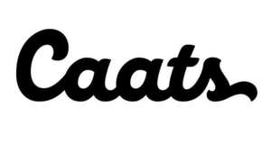

Trade Mark Journal No.2025/018 2 May 2025
UK00004179098 25 March 2025 (3,5,18,21,28,31,35)

- Class 3
- Non-medicated mouthwashes for pets; baths for animals [preparations]; cosmetics for animals; deodorants for pets; air fresheners for pets; grooming preparations for animals; cleaning preparations for cages for animals; skin care preparations for animals; dental care preparations for animals; grooming preparations for animals; breath freshening preparations for animals; shampoos for pets; shampoos for pets [non-medicated hygiene preparations]; shampoos for animals [non-medicated hygiene preparations]; conditioning sprays for animals.
- Class 5
- Veterinary products ; veterinary preparations and substances; food supplements for animals; Additives for animal nutrition for veterinary use; lotions for veterinary use; pharmaceutical preparations for animals; preparations for washing animals; dietetic foodstuffs for veterinary use; mineral supplements for animals; vitamins for animals; dietetic substances for veterinary use; Vitamin supplements for animals; dietetic supplements for animals.
- Class 18
- Collars for pets ; collars for animals; collars for pets containing medical information; costumes for animals; blankets and warm clothing for animals; blankets for animals; animal skins; animal clothes; pet clothes; harnesses for animals; leg warmers for animals; leashes for animals; leashes for pets; clothing for animals; leather and imitations of leather.
- Class 21
- Toothbrushes for pets; feeders for small animals; electronic feeders for pets; non-mechanized feeders for pets; bowls for food and drink for pets; bowls for pets; bowls for feeding pets; animal-activated feeders; feeders for pets; combs for pets; combs for pets; litter scoops for pets; scoops for picking up pet excrement; scoops for picking up animal excrement; plastic containers for drinking pets; plastic containers for dispensing food for pets; household containers for storing pet food.
- Class 28
- Stuffed toy animals; games and toys for pets; rope toys for pets; toys for animals; toys for pets; toys for pets containing catnip; toys for domestic animals.
- Class 31
- Foodstuffs for animals; beverages for animals; pet food; flours for animals; candied foodstuffs [animal food]; grains for animal feed; yeast for animal feed; roots for animal feed; fortifying food substances for animals; edible chewable articles for animals; bones for dogs; canned or preserved food for animals; food in pieces for animals; biscuits for animals; bedding and litter for animals; Foodstuffs for animals.
- Class 35
- Advertising; business management; business administration; Data processing services [office functions]; Commercial intermediation services; advertising relating to veterinary products, toys and animal feed; Wholesale services relating to veterinary products; Wholesale, retail and online retail services relating to veterinary products; Wholesale, retail and online retail services relating to toys; Wholesale, retail and online retail services relating to foodstuffs; Wholesale, retail and online retail services relating to animal clothing; Wholesale, retail and online retail services relating to animal beauty instruments.
CAATS SAS
Representative: Reddie & Grose LLP